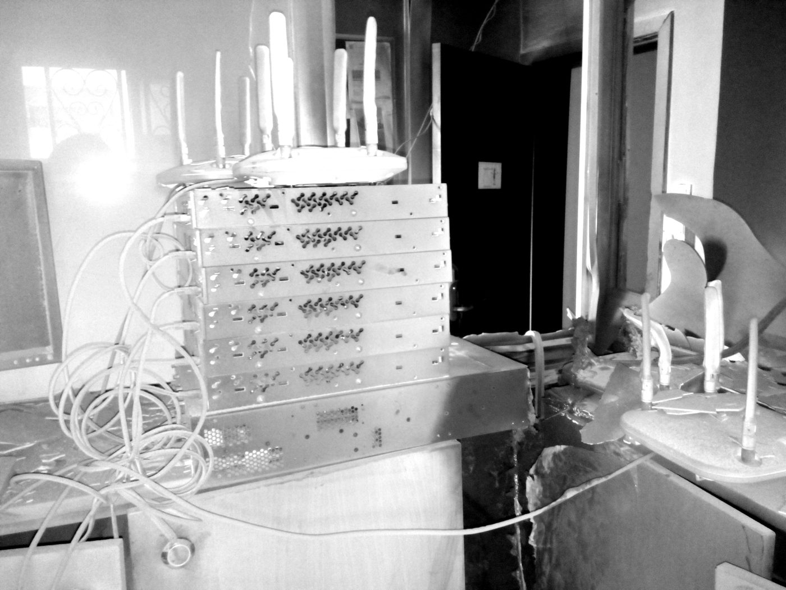
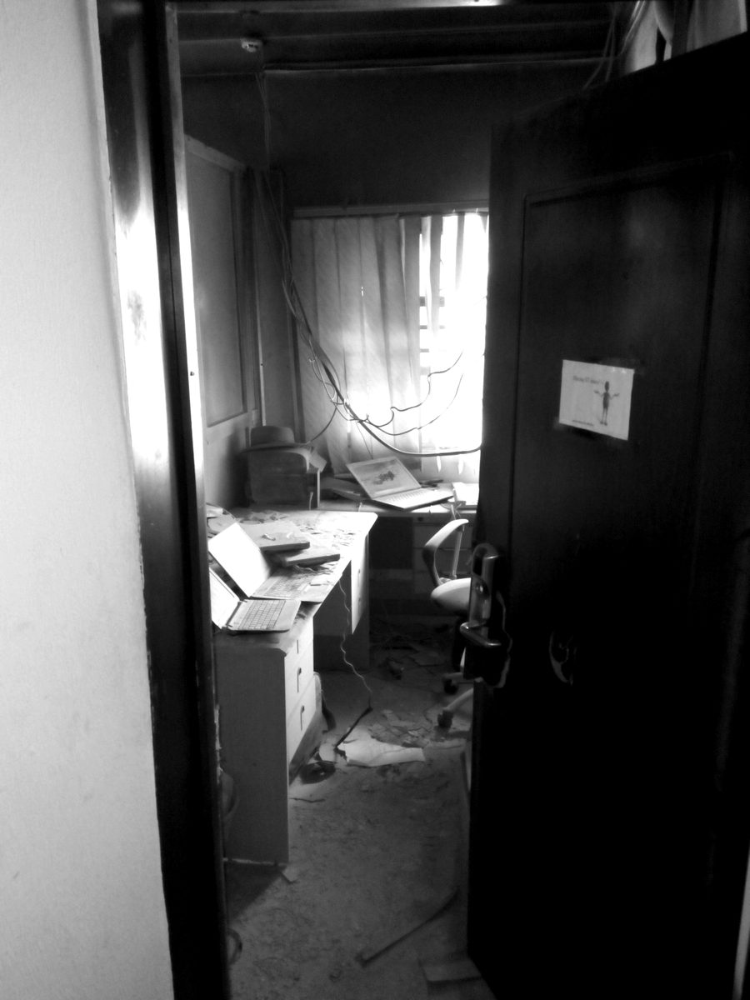
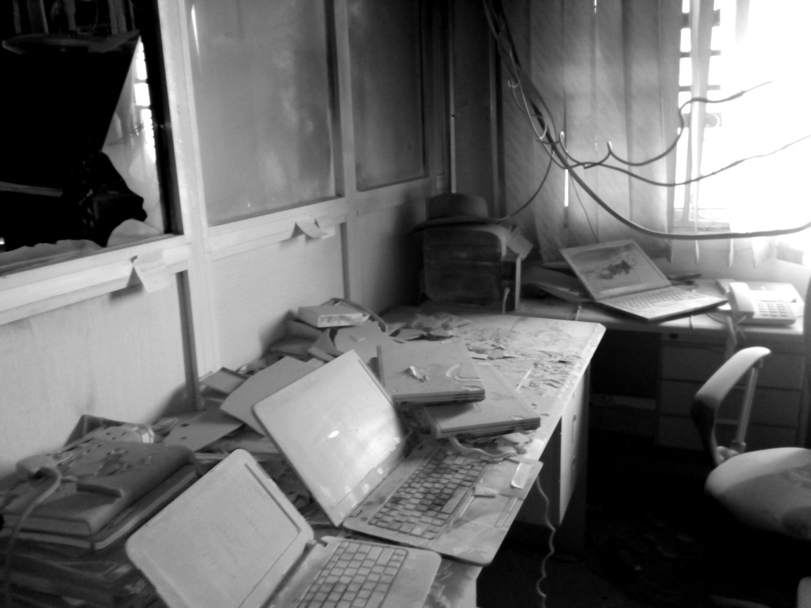

The night the server room burned.
I was at an ICT conference in the United States when the call came in the early hours: a fire had gutted the server room at the international NGO where I ran IT, back home in Nigeria. Staff were due in on Monday.



The call
Thousands of miles away, with only a phone line and a team of non-technical colleagues on site.
What's still alive?
I walked them through checking every device. Most were gone, but one of the main switches could be cleaned up and saved.
Back online, by phone
Step by step, we set up a replacement router, moved the cabling to the surviving switch and brought the building's access points back, with makeshift power in place.
Business as usual
Staff arrived to working internet, email on Microsoft 365 and their files. The file server came back up, and our off-site backup disks were safe.
Disasters don't wait until you're in the office. The work you did months earlier — off-site backups, cloud email, a team that can follow instructions calmly — is what saves you.